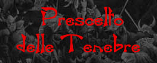

| Climate/Terrain |
Any |
| Frequency |
Very
Rare |
| Organization |
Solitary
or Gruop |
| Activity
Cycle |
Any |
| Diet |
None |
| Intelligence |
Vary |
| Treasure |
Occasional |
| Alignment |
Qualsiasi
Evil |
| No.
Appearing |
1
(1-4)
|
| Armor
Class |
5
(o a seconda corazza) |
| Movement |
12 |
| Hit
Dice |
Variabile |
| Thac0 |
Variabile |
| No.
of Attacks |
1
Artiglio + Variabile |
| Damage
/ Attacks |
1
- 6 + 2 |
| Special
Attacks |
Paralisi |
| Special
Defenses |
Vedi
sotto |
| Magic
Resistance |
Nil |
| Size |
Variabile |
| Morale |
Fearless
(19) |
| XP
value |
XP
della classe + 1500 |
 I
Prescelti delle Tenebre sono speciali non morti corporei creati attraverso il rito Il
Dono delle Tenebre che i chierici di Karan possono eseguire a partire dal
9° livello di esperienza (link). A differenza di molti
altri non morti, i Prescelti si sono sottoposti volontariamente a questa
tenebrosa trasformazione quando erano ancora in vita. Solo coloro che avevano
intrapreso il sentiero di una classe di personaggi e che avevano raggiunto
almeno il 3° livello di esperienza possono essere trasformati in Prescelto
delle Tenebre. I Prescelti mantengono la propria coscienza e volontà a seguito
della trasformazione (non risultando asserviti in maniera automatica al chierico
che li ha sottoposti al rito) ma essendo plagiati dal potere delle tenebre
mutano il loro secondo allineamento sempre in Evil con tutte le conseguenze che
il cambio dell'allineamento può avere.
I
Prescelti delle Tenebre sono speciali non morti corporei creati attraverso il rito Il
Dono delle Tenebre che i chierici di Karan possono eseguire a partire dal
9° livello di esperienza (link). A differenza di molti
altri non morti, i Prescelti si sono sottoposti volontariamente a questa
tenebrosa trasformazione quando erano ancora in vita. Solo coloro che avevano
intrapreso il sentiero di una classe di personaggi e che avevano raggiunto
almeno il 3° livello di esperienza possono essere trasformati in Prescelto
delle Tenebre. I Prescelti mantengono la propria coscienza e volontà a seguito
della trasformazione (non risultando asserviti in maniera automatica al chierico
che li ha sottoposti al rito) ma essendo plagiati dal potere delle tenebre
mutano il loro secondo allineamento sempre in Evil con tutte le conseguenze che
il cambio dell'allineamento può avere.
Combat
I Prescelti delle
Tenebre mantengono tutte le conoscenze che avevano in vita comprese quelle
specifiche della loro classe. Mantenendo anche il livello di esperienza che
avevano raggiunto possono continuare ad usare le abilità specifiche della loro
classe e possono continuare a progredire nella classe stessa continuando ad
accumulare punti esperienza, dovranno però raggiungere un ammontare di punti
esperienza pari al 333%
di quelli che dovrebbero normalmente raggiungere per la classe scelta. Non potranno però più, qualora fossero stati umani, optare per una futura
classe duale.
Il
Prescelto ottiene
tutte le caratteristiche proprie dei non morti (link).
La classe armatura
naturale del Prescelto scenderà da 10 a 5 alla quale poi si potranno applicare
i bonus magici e della destrezza, ciò a meno che non utilizzi corazze con
fattore di protezione migliore nel qual caso si utilizzerà la classe armatura
base della corazza.
Il
Prescelto può
essere scacciato come un non-morto di dadi vita pari a 5 + livello di esperienza
+ eventuale bonus di intelligenza.
Oltre ai suoi
normali attacchi fisici di classe (e qualora non utilizzi uno scudo o un'arma a
due mani) il prescelto può operare l'attacco di non morto (attacco multiplo
contemporaneo) con fattore iniziativa + 3. Si tratta di un'artigliata che
produce 1 - 6 + 2
danni e che paralizza
chi viene ferito per 1 - 4 + 1 rounds
se costui non supera un tiro salvezza contro paralisi.
Habitat/Society
Il più delle
volte divengono Prescelti i migliori fedeli di potenti chierici di Karan che una
volta divenuti Prescelti continuano a servire come se fossero paladini. L'odore
di cadavere che emanano spesso li costringere a vivere isolati in zone non
civilizzate o nascosti alla vista dei comuni mortali.
In alcuni casi,
però, i chierici di Karan, al solo scopo di portare il male nel primo piano
dimensionale e dietro lauti compensi o patti, estendono il Dono delle Tenebre
a creature non direttamente fedeli della loro divinità. Ovviamente a seguito di
tale rituale sorgerà un legame forte, seppure non di subordinazione, fra il
chierico di Karan e il nuovo Prescelto che ha creato.
Ecology
Essendo creature
non morte non hanno alcun rapporto con l'ecologia del primo piano materiale, non
si devono mai riposare e non hanno bisogno di nutrirsi o dissetarsi, costituendo
invece un morbo per tale ecologia.